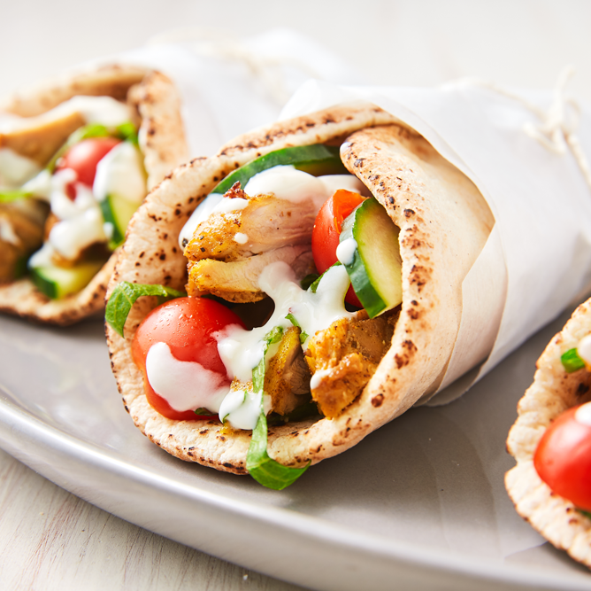

Chicken Shawarma

Description
Chicken Shawarma is a Middle Eastern dish made from thinly sliced marinated chicken, typically cooked on a vertical rotisserie. It's known for its tender, flavorful chicken packed into pita bread or served with rice and vegetables.
The marinated chicken is seasoned with a blend of Middle Eastern spices, giving it a unique and aromatic flavor profile.
Ingredients
- Chicken thighs or breast
- Yogurt
- Lemon juice
- Garlic
- Cumin
- Paprika
- Turmeric
- Cayenne pepper
- Sumac (optional)
- Onions
- Pita bread or wraps
- Tahini sauce or garlic sauce
- Pickles and vegetables for serving
- Salt
Steps
- Marinate chicken with yogurt, lemon juice, minced garlic, and spices for 2 hours.
- Thread marinated chicken onto skewers; grill or roast until cooked through.
- Warm pita bread or wraps; spread with tahini or garlic sauce.
- Slice cooked chicken; layer inside pita with onions, pickles, and vegetables.
- Wrap tightly and serve hot, garnished with more sauce and vegetables.